進行中專案
正在檢查 APM 權限...
本期衝刺
任務卡片
需主管協助
Board
APM 任務看板
Architecture
跨模組登入與資料來源
由 Logging 完成 Google 登入與員工角色判斷。
APM 會以登入 email、角色與 Data Scope 決定可見專案。
APM 可使用自己的 Supabase 專案，只接收可信任身份。
新增、指派、狀態異動、匯出與刪除都應寫入不可竄改紀錄。
進行中專案
本期衝刺
任務卡片
需主管協助
Board
Architecture
由 Logging 完成 Google 登入與員工角色判斷。
APM 會以登入 email、角色與 Data Scope 決定可見專案。
APM 可使用自己的 Supabase 專案，只接收可信任身份。
新增、指派、狀態異動、匯出與刪除都應寫入不可竄改紀錄。
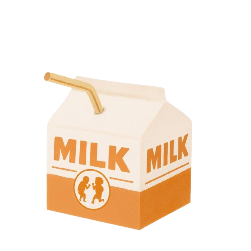
歲悅長照集團 Suiyuecare Corps.Start Here
Updates
專案管理模組正式上線，協助照顧服務、政府計畫、內部任務與跨部門進度更清楚被追蹤。
電子用印模組導入行政流程，讓文件申請、核准、用印與紀錄留存更有效率。
整合新店、中和、永和居家照顧服務，並納入復能與個案管理專業，擴大新北照顧服務網絡。
萬華二館完成設立，延伸社區長照服務量能，讓臺北市西區家庭有更多在地支持。
會計模組正式上線，串接財務、行政與照顧營運資料，強化內部管理與服務紀錄銜接。
參與臺北市勞工局 115 年度青年就業活動，與青年人才交流長照職涯、服務現場與未來發展。
萬華一館完成設立，作為社區長照服務的重要起點，提供長輩日間支持與家屬照顧資源。
士林、北投、南港區居家長照服務啟動，建立臺北市到宅照顧、督導管理與家庭支持基礎。
得標士林、大同、信義區失智社區服務據點，提供失智友善活動、家屬諮詢與社區支持。
得標臺北市勞動力重建運用處 115 年度「雇主安心計畫-集中訓練」，協助家庭雇主與看護工作者提升照顧品質。
得標勞動部勞動力發展署 115-116 年度「移工數位學習計劃」，推動移工照顧技能數位化學習。
得標高雄市政府勞工局 115 年度「外國人從事家庭看護工作補充訓練計畫」，強化家庭看護照顧訓練支持。
照顧不是單一天的安排，而是一段被串好的服務歷程。歲悅把個案管理、日照服務、居家照顧、家屬系統與移工教育整合在一起，讓家庭知道每一步會發生什麼、誰會協助、後續還能怎麼被支持。
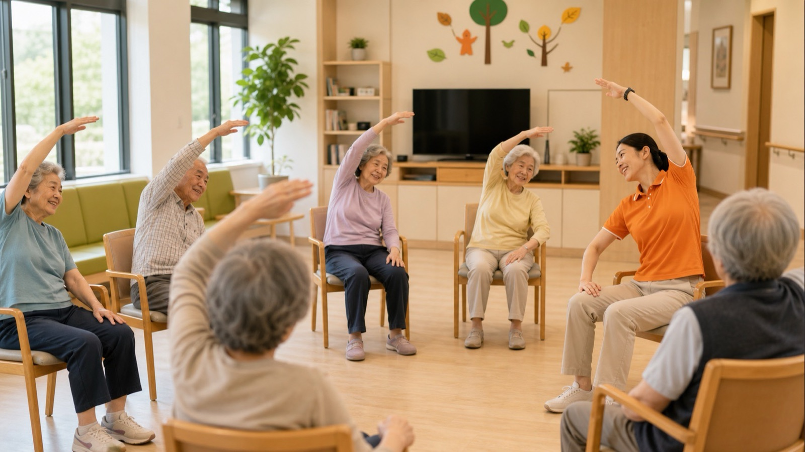
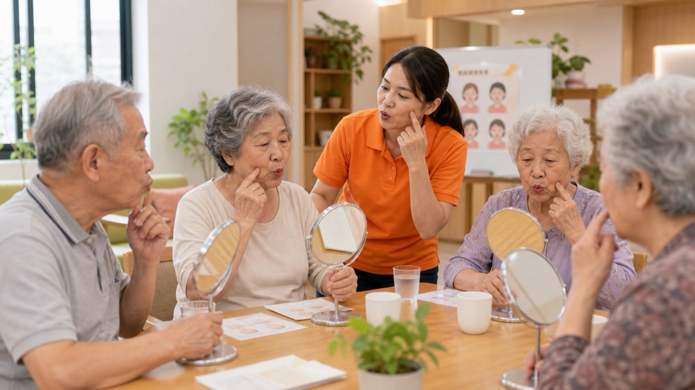
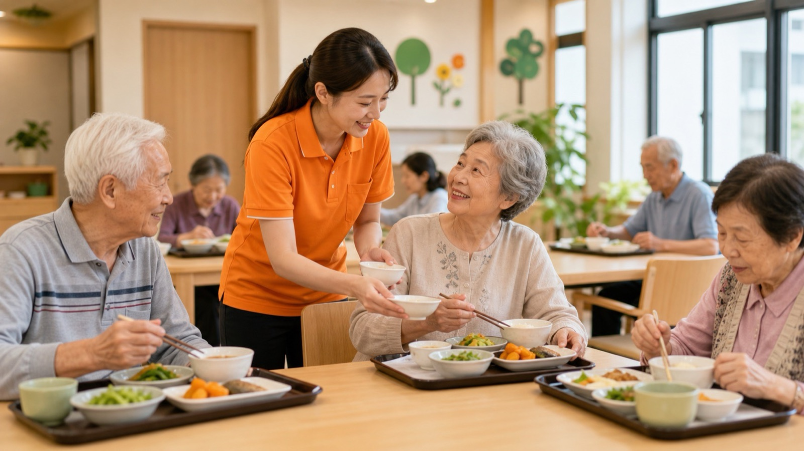
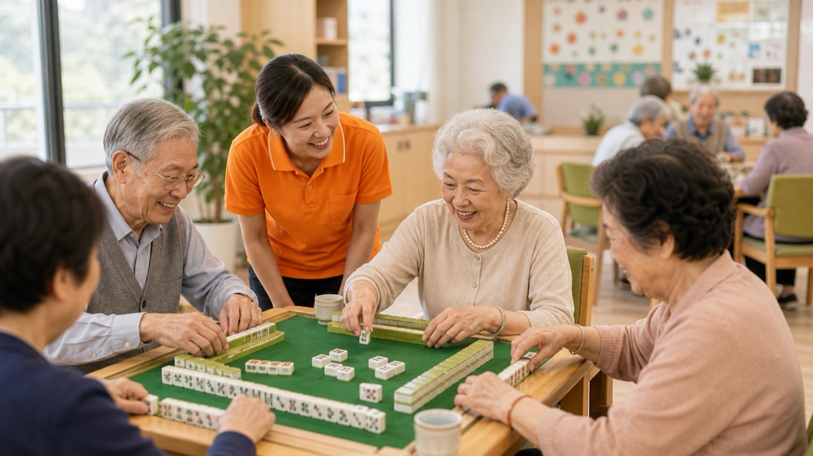
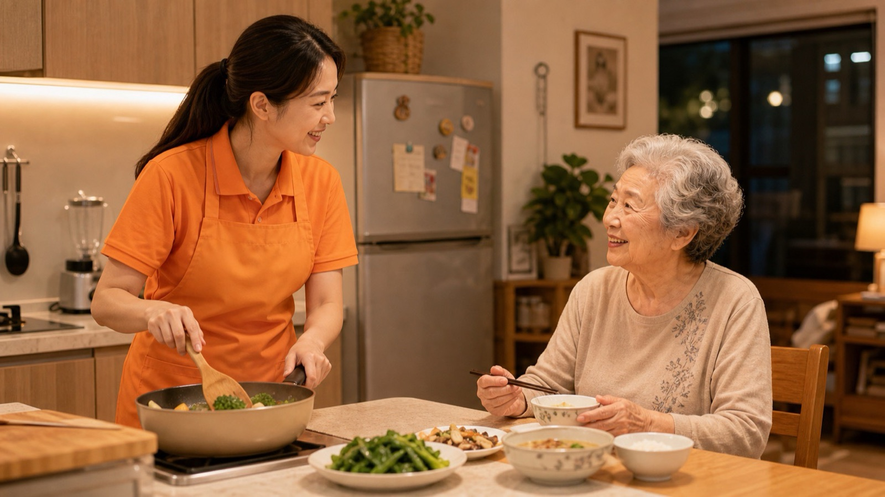
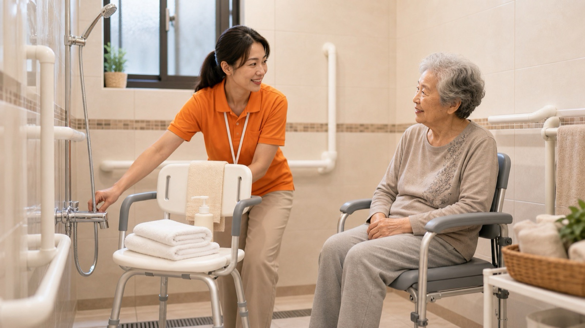
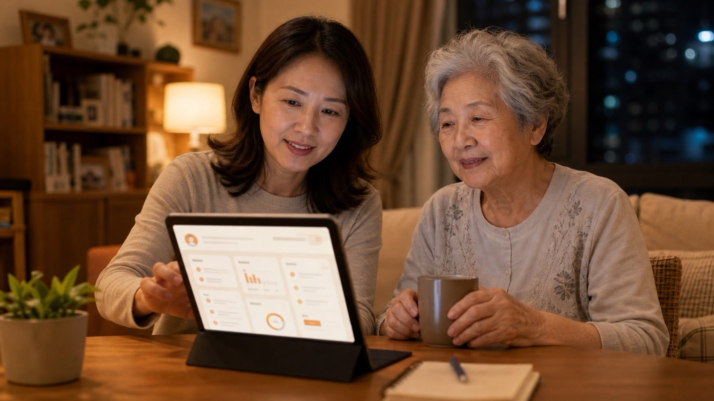
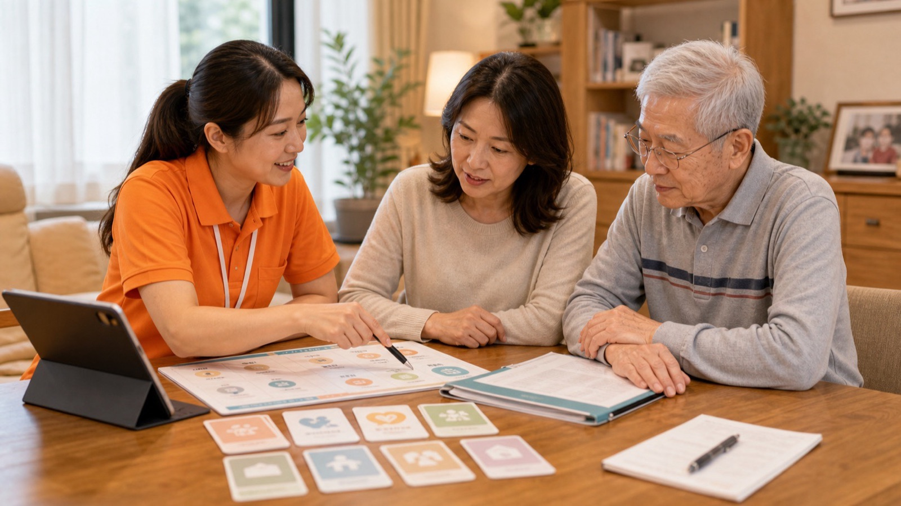
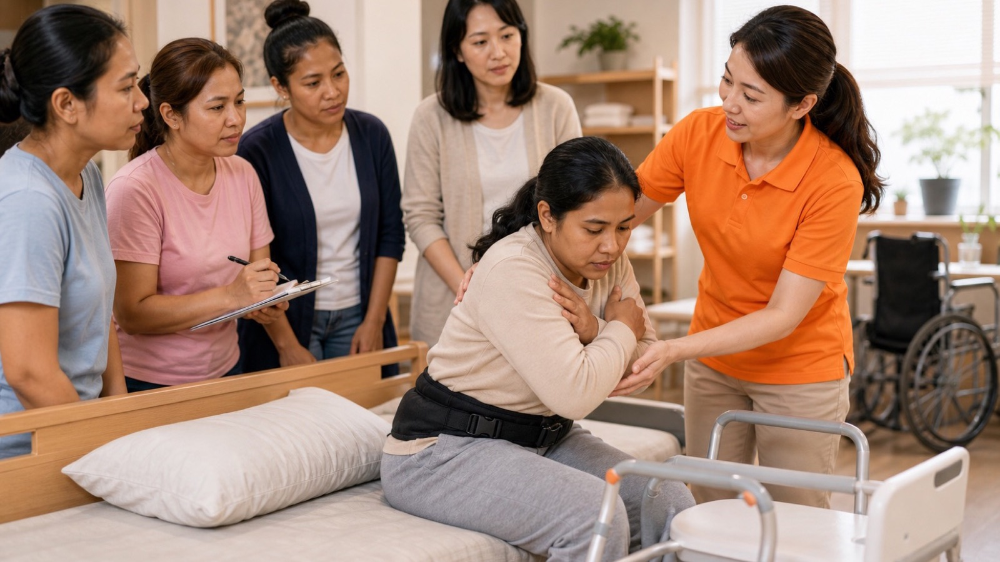
先到家中了解案主身體狀況、生活習慣、家庭照顧壓力與可使用的長照資源，讓服務不是從表格開始，而是從人開始。
家屬與長輩來到機構參觀，認識動線、活動空間、餐食安排與照顧團隊，先確認這裡是不是適合長輩每天來的地方。
到指定單位完成體檢與必要資料準備，讓日照中心能掌握健康風險、用藥、飲食與照顧注意事項。
早上由交通車協助接送，降低家屬接送壓力，也讓長輩能穩定銜接日照中心的一天。
透過伸展、節奏與團體活動，維持身體活動量，也讓長輩從互動裡慢慢進入日照生活節奏。
午餐前安排健口操，幫助長輩練習口腔肌肉、吞嚥準備與用餐安全，讓照顧落在細節裡。
照顧團隊觀察食量、吞嚥、用餐情緒與特殊飲食需求，餐食不只是吃飽，也是健康與生活狀態的回饋。
午休讓長輩恢復體力，也讓照顧團隊依照個別狀況觀察睡眠、精神與下午活動參與度。
下午透過麻將、桌遊與團體活動，維持認知刺激、社交互動與生活樂趣，不只是照顧，而是一起生活。
日照服務結束後，交通車協助長輩安全返家，讓家庭照顧節奏能順利接上晚上的生活。
晚間由居家照顧服務員到家中協助備餐、陪伴與生活照顧，讓日照服務後仍有人接住日常需求。
沐浴照顧重視安全、尊嚴與長輩習慣，讓最私密、最容易有風險的照顧，也能被專業細緻完成。
家屬可以從系統看見長輩今日活動、餐食、照顧紀錄與提醒，不用靠猜，也不用等到問題發生才知道。
服務不是結束在當天。歲悅會透過定期家訪、電訪與追蹤，掌握家庭照顧壓力與長輩狀態變化。
當家庭需要更多支持，歲悅會協助連結正式服務與非正式資源，讓照顧網絡不是單點，而是一整套支援。
如果家中後續聘請外籍看護，歲悅也能提供照顧技能、溝通與安全訓練，讓家庭照顧品質持續穩定。
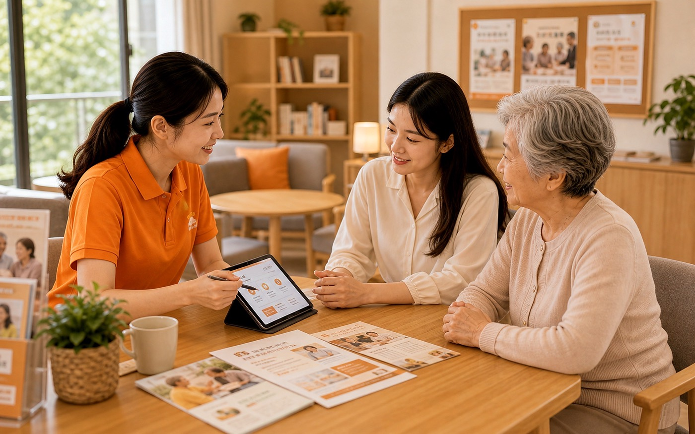
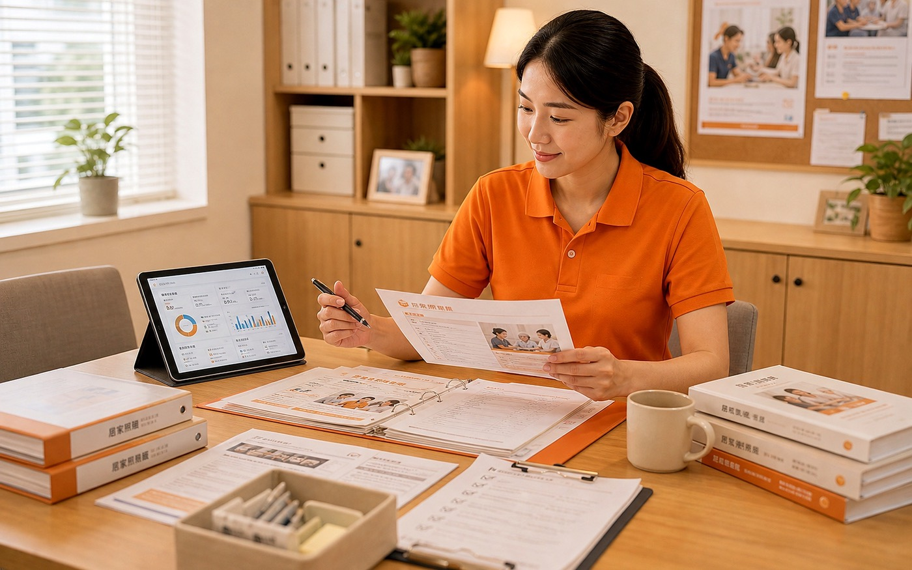
Service Scene
Care Visit
Day Care
Reablement
Nursing Care
Home Care
Care Record
Care Values
從需求初談、服務媒合到每日回報，每一步都清楚、可追蹤、有人接住問題。
照顧不只是完成任務，而是尊重習慣、選擇與生活節奏，讓長輩保有主體感。
團隊、督導、課程與據點互相支援，讓家庭不是撐著，而是有人一起走。
Video
Care Network
用居家站、日照中心、社區據點與護理復能團隊，形成多點支援的照顧網絡。
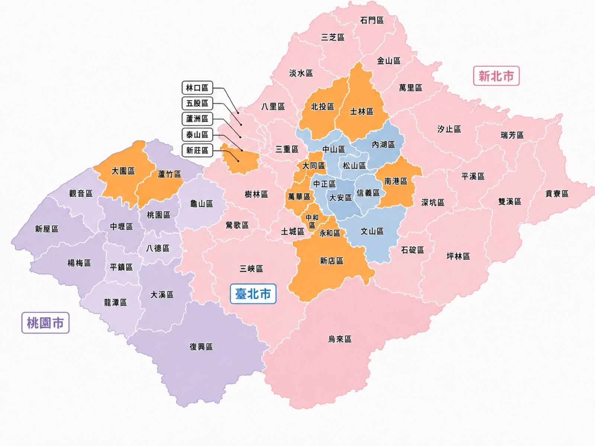
Services
Care Stories
家屬最真實的安心，來自照顧被看見、被回報，也有人一起承擔。
Health 3.0
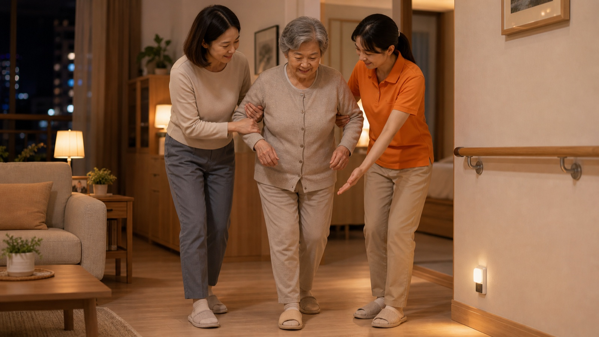
Master Talk
左右滑動查看更多專欄
Contact Us
不用一次準備完整資料。先留下姓名、電話與需求類型，我們會依照你的狀況安排合適窗口，原則上 1 個工作天內主動聯繫。